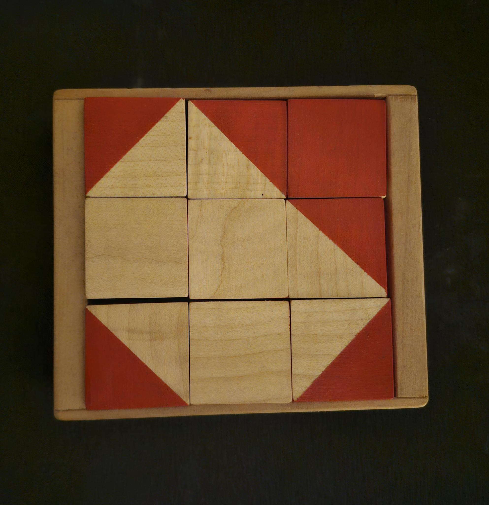
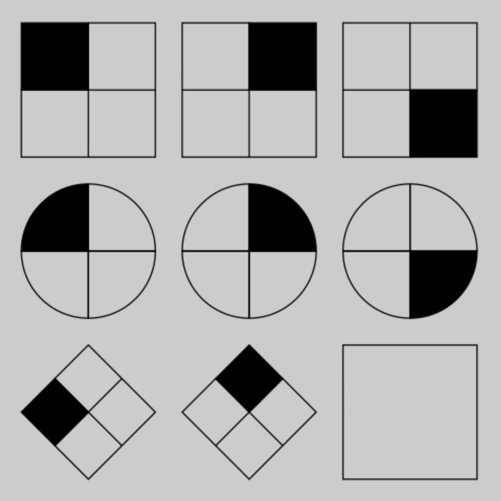
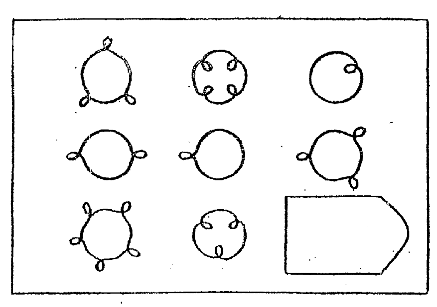
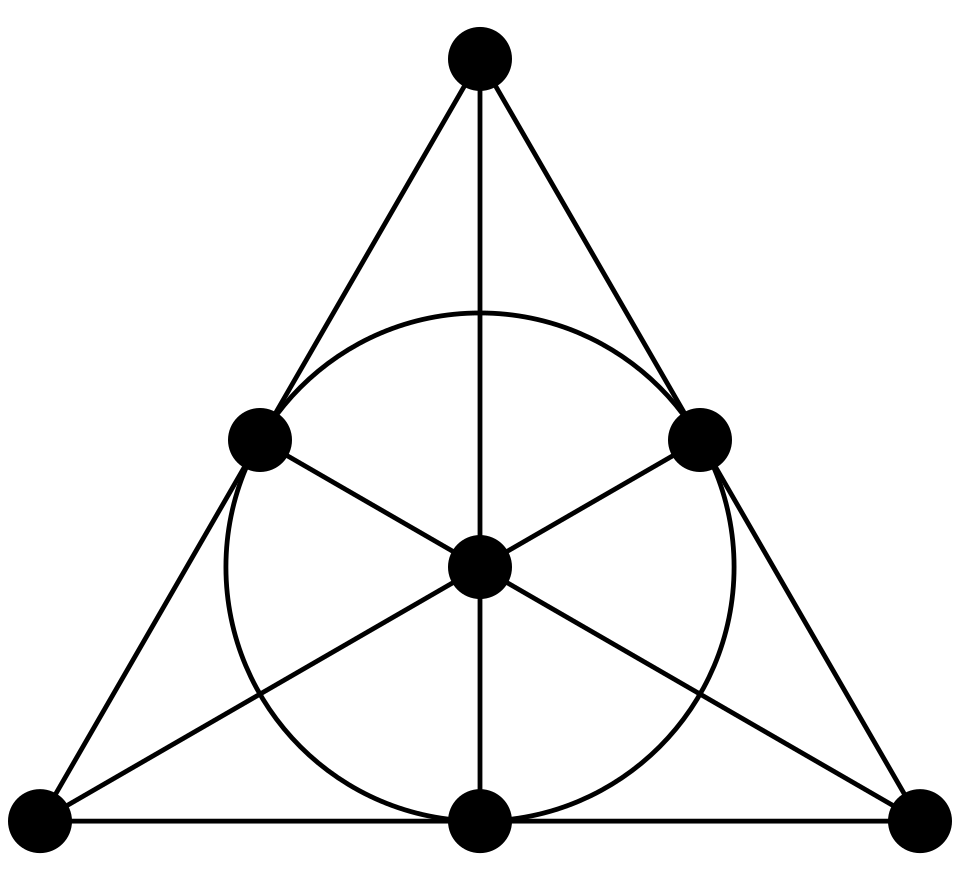
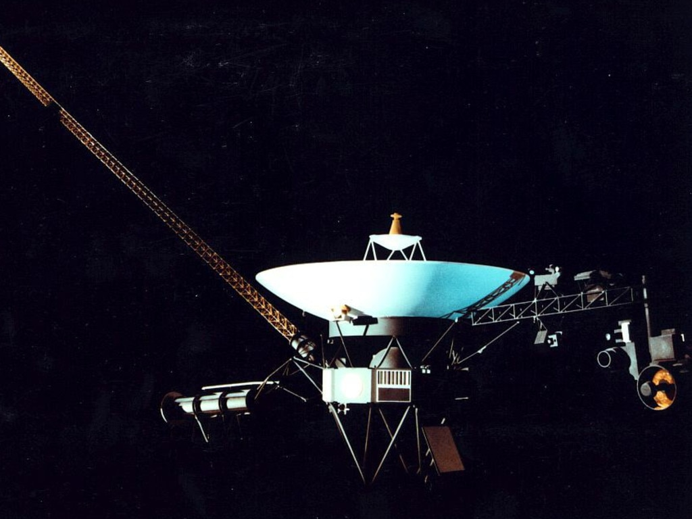

The preceding "test," somewhat facetiously styled after John Raven's famous matrices, is intended for several purposes. Partly it is a form of aesthetic indulgence: I have long been partial to the look and feel of certain psychometric instruments, of which Raven's matrices are one example and eponymous blocks from the WAIS Block Design are another, and this was an opportunity to dabble in it as a sort of artform. While I am suspicious of many of the scholarly, social, and political ends to which such instruments are often put, the twin pressures of utilitarian austerity (as a scientific tool) and practical functionlessness (to gauge putative purely abstract and general abilities in the subject) to my mind result in products with a certain playful, crystalline quality to them. I am unsure how widely shared this aesthetic sense is, but I expect at least some others will be familar with the sensation to which I am pointing. I hope, in some degree, to have replicated that sensation here.
The test is also meant, as those in my social circles will most likely already have surmised, as a sort of "fan art" homage to nostalgebraist's great Christmas novel, The Apocalypse of Herschel Schoen. Raven's matrices appear both as an early plot point and a recurring thematic motif throughout the novel, in ways with which this test's questions in particular are meant to resonate. If you would like a better sense of the intended resonance, you should check out the book!

Primarily and for the most part, however, the test is intended as a way to teach, play with, and better understand the celebrated and sublime Witt Geometry (or Witt design) and its automorphism group, the sporadic simple group M24, as well as its sub-geometries whose corresponding automorphism groups are the other, smaller Mathieu groups (hence the name of the exam!) Mn (for 7 < n < 13, 19 < n < 24). This geometry, together with its group of symmetries, is the remarkable something to which I alluded in the introductory text for the last problem.
The lack of mathematical jargon in the presentation of the test itself is deliberate. Particularly among those who still carry the shame wastefully inflicted upon them by a poor childhood mathematics education, the presence of mathematical jargon or symbolism often acts as a deterrent. But, even more importantly, it can obscure the true nature of the content being presented. It fosters an illusion that the technical language is the real phenomenon of deep interest, and that the thing experienced directly in playing through the puzzles is a comparatively inauthentic manifestation of an underlying set of equations or formal sentences. But in cases like this test it is precisely the opposite way around: it is navigating the puzzle that affords what immediate access there is to be had to the object under consideration, of which technical presentations are relatively detached accounts. While there are gains to be made in rigour and reproducibility in a formal presentation of the same subject matter, they trade off (just as with other scientific descriptions of terrain, organisms, vel sim.) against the immediacy available through playing with it. Still, now that you have some mastery over the puzzles, it will help to introduce a few introductory concepts in group theory in order to appropriately situate the objects at hand in their august position relative to the surrounding combinatoric landscape.
There are at least three ways to introduce the concept of a group. First, one may consider a group as a set of objects together with a binary operation satisfying a few simple axioms, or as a model of a certain small list of equations. That is, one may consider groups as a variety of algebras. Second, one may consider them as classes of permutations on an object, subject to certain closure conditions. In this case, groups appear as certain function spaces with identical domain and codomain, called permutation groups. Finally, one may consider a group as the class of automorphisms on an object endowed with a certain structure, i.e. transformations of the object that preserve its structure. If so, then groups are naturally thought of as the systems of symmetry for structured objects. The three approaches are only notionally different: provably, a group considered under any one of these guises is equivalent to a group under either of the others. But, as notional differences, they approach the shared concept from different angles.
As definitions, the three are given in descending order of prima facie generality. It is trivial to show that any class of automorphisms will be a permutation group, and that any permutation group will be a group simpliciter. The reverse inclusions are, while fairly elementary results, nevertheless not entirely trivial exercises. In rigorous pedagogical contexts, therefore, the algebraic approach is usually taken as canonical in the order of definitions. In the order of motivations, however, the positions are inverted. It is the concept of symmetry, and the coordinate concept of an automorphism, that lends interest to the other two. The closure conditions for a permutation group naturally emerge as requirements on anything qualifying as a system of symmetry, and the axiomatic definition of a group as an abstract formalisation of appropriately closed classes of permutations. We will therefore consider the three approaches as stated in reverse order.
The most familiar form of symmetry (how most of us probably learned the word) is the bilateral reflectional symmetry exhibited by, say, an inkblot diagram. The inkblot test is symmetric about a certain axis, which is to say that it can be reflected across that axis while preserving its structure. Thus there is a transformation, an automorphism, to which its structure is indifferent. Of course, not all such transformations one could induce in the inkblot diagram would preserve this structure. Reversal along its horizontal axis, or either diagonal axis, for example, would fail to do so. Even more radically, a random reassignment of the points in the diagram would clearly destroy the structure. The class of structure-preserving transformations of the inkblot is thus very limited: there is exactly one such (reflection along the vertical axis), and performing the transformation twice in a row will "cancel out" to the original distribution of points.

To get a bit clearer on this idea of structure and its preservation, it will help to consider objects which are symmetric in somewhat more expansive ways. As the degenerate limit, there is a mere set, a totally unstructured collection of points. The only structure-like trait it possesses is its cardinality, the number of points it contains. The automorphisms of a set are thus all the permutations (or scramblings, or reassignments, or bijective endofunctions) of the set, which will preserve that cardinality. Beyond that, they never destroy structure on the set's part, for one cannot lose what one does not have to begin with.
As a less extreme example, consider a featureless cube. There is an intuitively clear notion of a structure-preserving transformation on the cube: they are its ninety-degree rotations in space, as well as sequences of such rotations performed one after the other. A cube thus altered is indistinguishable in respect of its shape from the cube unaltered. There are a few of things to note here. First, there is always a trivial, degenerate "transformation" on any object however asymmetric, that leaves it unaltered in this way, viz. the "identity transformation" of simply leaving it be. This corresponds to not moving or changing the cube at all, which will of course leave its shape intact. Second, the transformation must move a given point in the object to the former position of some other point, for otherwise it will clearly no longer be structurally indistinguishable from how it began. Turning the cube a mere forty-five degrees, for example, or shifting it up an inch, leaves it occupying a different space than it did before. Third, in assessing whether a transformation of an object ultimately changes its structure, it only matters how the object ends up at the end of the process. Thus, we can (indeed, should) for these purposes conflate transformations that wind up with the same end result. So, for example, two successive clockwise yaw rotations at right angles are the same for our purposes as two successive widdershins yaw rotations. Indeed, four successive rotations in any direction along any axis are all the same, for the effect they have on the cube's shape is but that of leaving the cube be. For that matter, continuously rotating the cube ninety degrees in a certain direction along a certain axis is no different, from this perspective, from disassembling the cube into its constitutive points and reassembling them as though the cube had simply been so rotated. All that matters is where those points end up, in relation to each other.
This gives us our first pass at a slightly more rigorous formulation of the concept of an automorphism. An automorphism of an object will be effectively equivalent to a certain one-to-one function from the points constituting the object to those same points. This identification of a transformation with its corresponding function is perfectly legitimate, since the function records all and only the information we care about: to which point's position under the transformation is a given point reassigned? And the function f will respect the structurally relevant relations of the object, so that for any such relation R, if point x bears R to y, say, f(x) will bear R to f(x). (The restriction to two arguments is simply for ease of statement: it should also respect structurally relevant relations of fewer or more arguments, such as in this case the triadic spatial relation of x being between y and z.) Thus, for example, since the rear upper left corner of the cube is connected by an edge to the fore left corner, so the point to which any sequence of rotations reassigns the rear upper left corner will be connected to the point to which it reassigns the fore upper left corner.
This is, as I just said, slightly exacter than vague talk of structural preservation, but only slightly. It still leaves us with the weasel words "structurally relevant", as applied to the relations respected by a transformation-function. The ambiguity involved here, however, is irreducible. Which relations among points in the cube are structurally relevant? It is, to some extent, an arbitrary matter of choice. Consider, for example, the relation of one point being to another point's left on the same face (from the point's perspective, oriented with a designated up-down axis). Is this relation structural? It depends on the purposes at hand. And different choices will give different verdicts as to the contents of the cube's automorphisms. If it gets counted as structural, then the automorphisms will, as we have been assuming, be just its right-angled rotations. If not, we will also need to include among its automorphisms mirror inversion along any of its axes, joined in sequences with the aforementioned rotations (these are sometimes known as rotoflections). These are two distinct groups, the rotational and full symmetry groups of the cube respectively, corresponding to slightly different structures defined on the same points, one slightly richer than the other.
The concept of symmetry, to which the idea of an automorphism gives more precise expression, is extremely ubiquitous. To any set of relations one might investigate among certain points or objects or entities, there will be a corresponding notion of a permutation respecting those relations, and thus of an automorphism. Hence the widespread use of the concept of a symmetry group throughout science and mathematics. But it is of more everyday significance as well. Symmetries—not just in terms of spatial rotoflections, but for any number of different types of transformation corresponding to different criteria of structural relevance—pervade familiar human (and animal) life. They shape our perceptions and thoughts, guide our schemes of conceptualisation and classfication, and in general take a leading role in whatever could plausibly be called intelligence. Hence the naturalness of their use in psychometric instruments designed to test and study intelligence. Consider, for example, this simple Raven matrix.

The matrix, in essence, asks the suject to identify and track certain symmetries (in terms of internal quadrant structure) in the geometric object being altered across various transformations (scalings, rotations, and deformations). The solution is grasped by discerning both the essential structural features of the object preserved across the panes and the relations among the transformations in each pane. We will have a bit more to say about how this is done shortly.
What can we say about the permutations in the automorphism group of an object, considered simply as permutations? One feature we have already noted: they will always contain the trivial identity permutation, sending each point to itself. Second, because they are bijective functions f, one can always take their inverse, which for any x sends f(x) back to x. Since (ex hypothesi) the structure of the object remains the same before and after a transformation is applied to it, this inverse function will also be an automorphism. And, finally, since identity (including identity of structure) is transitive, chaining two (or more) automorphism functions together one after the other also preserves the structure, so that it is an automorphism too. These three conditions (containing the identity, closure under inversion, and closure under chaining or composition) are, in fact, the defining conditions of a permutation group.
It is still possible, however, to ascend one level of abstraction higher. Rather than considering the transformations as permutations, consider them simply as unspecified things, objects, or elements. In place of the specific operation of function composition, let there be some binary operation or other taking any ordered pair of these elements to another element, just as composing two permutations produces another permutation. This placeholder operation is called the multiplication operation on the elements of the group, and is usually represented by either the infix • or + (so that the result of the operation as applied to the pair of elements (a, b) is denoted by a•b or a+b) or, more commonly, mere concatenation (so that the same result is denoted by ab). The identity permutation will apply to a special element e (sometimes written as 1 or 0, depending on the infix notation used), such that, for any x, ex = x = xe. The inverse permutations mean every element x will have an inverse (or negative, or opposite) element x-1 or -x (again, depending on use of concatenation/• or +). And, since composition of functions is associative, so is group multiplication: (xy)z = x(yz). This is the variety of groups, defined axiomatically: any set of elements, together with an operation obeying these requirements, is defined to be a group.
With this notation, of course, the most familiar sort of group will be the groups commonly thought of us as groups of number. The integers, rationals, real line, and complex plane (under addition in the first case, under either addition or multiplication in the others) all serve perfectly well. But these groups can be misleading, in that they possess certain important features not guaranteed among groups generally. The first is quite obvious: they are infinite, whereas many groups (like the symmetry groups discussed above of the inkblot test and featureless cube) are finite. It is possible to "shrink" the integers, for example, into finite form by considering the modular or "clock" addition of integers relative to some finite positive number n. x+y in this group's understanding of addition (for x and y smaller than n), will be the remainder of x+y (added normally) as divided by n. This process of shrinking, called quotienting, is of fundamental importance to the theory of groups.
But even then, there is a deeper dissimilarity between the resulting "cyclic" group Cn (and the other "number" groups from above) and, say, the automorphism group of the cube. Multiplication (meaning, in this case, addition!) in the cyclic group, like multiplication or addition of two integral, rational, real, or complex numbers, is commutative. That is, for any x and y, x+y = y+x: the order in which the elements are multiplied (added) is irrelevant. Consider, on the other hand, our cube. A ninety degree pitch multiplied (followed) by a ninety degree yaw is not equivalent to the same two rotations performed in reverse order; if you wish to confirm this, try it on the nearest three-dimensional object yourself. Groups in which all pairs of elements commute with respect to group multiplication, called "abelian" groups, are very special. They admit of a particularly elegant theory, and their finite instances are exhaustively classified by a very simple-to-state theorem. They are also, for this very reason, a bit dull, as groups go.
Commutativity of elements plays a special role in the generation of Raven matrices. Using concatenation notation, the canonical form of a Raven matrix (with the solution omitted) is as follows.
An element on the rightmost column is the product of its two rowmates, multiplied in the order in which they appear, mutatis mutandis for members of the lowermost row and their columnmates. The unsolved variable ? therefore admits of a solution iff xaby = xbay, which a trifling bit of grade school algebra will show obtains iff ab = ba. A Raven matrix, therefore, is defined by any pair of arbitrary group elements x and y, plus two commuting elements a and b. And so, given an arbitrary element of a given group plus a member of its centraliser (the elements in the group to commute with it), it is possible to generate a Raven matrix on the pattern of the above, given some suitable guise under which to represent the elements belonging to that group.

There are a couple more basic thoughts from group theory it will be helpful to understand to grasp the significance of M24. First in the concept of a homomorphism between groups. Earlier we gave a definition of a function f "respecting" a relation: where x bears the relation to x (with both points in the domain of f), f(x) will bear it to f(y) (and similarly for relations of other adicities). This was given as part of a characterisation of automorphisms, bijective functions from a structure to itself that respect that structure's defining relations. But both these additional conditions can come apart from respect: a bijective relation-respecting function between two structures is an isomorphism between them, indicating similarity of (potentially quite abstract) shape; and a non-bijective relation-respecting function from a structure to itself is an endomorphism on the structure, representing a way to "collapse" or "shrink" that structure while remaining the kind of structure that it is. An automorphism is thus an isomorphism that is also an endomorphism. A homomorphism, meanwhile, is a relation-respecting function between any structures, without any expectation of bijectivity. And a homomorphism between groups specifically is a function between groups respecting group multiplication: for such a function f, for any x and y in its domain, f(x•y) = f(x)•f(y). Along with groups themselves, homorphisms between them are the conceptual bedrock of group theory.
There is a particular sort of automorphism of groups, called an "inner" automorphism of a group, that is of widespread significance. This is the automorphism of conjugation by a given element x of that group, which we may denote by ιx, and it takes an element y to its "conjugate" x-1yx. A subset of a group's elements is called a subgroup when any pair of elements drawn from the subset multiply to another element in the subset, and a subgroup is called normal whenever it is closed under conjugation (that is, for any x in the overall group and any y in the subgroup, ιx(y) is also in the subgroup). (Conjugability of one element into another, it is worth noting, is an equivalence relation, as you can verify for yourself.) Normal subgroups are important, for it is only by its normal subgroups that a group can be "shrunk" or "divided" or "quotiented" as the integers under addition are shrunk to the addition clock with n notches by the subgroup of integers divisible by n. It is a fundamental fact that the image of a group under a homomorphism f is isomorphic (as a group) to the group as shrunk by the subgroup of its elements f takes to the identity element e (which always form a normal subgroup).
For any finite group G, there will always exist some chain starting at G, ending at the trivial group containing only e, with every member a normal subgroup of its predecessor contained in no larger such subgroup (save for the predecessor itself, which is of course normal in itself). The penultimate subgroup will be simple: it will contain no normal subgroups besides itself and the trivial subgroup (much as a prime number contains no divisors save itself and one). The quotients of each nontrivial member of the sequence by its successor will be simple, too, and in fact there is a remarkable theorem relating such sequences to the simple finite groups, called the Jordan-Holder theorem. A given finite G may have a variety of these sequences, but for any such G the simple groups to occur as these quotients (including the penultimate sequence member, which is the same as its quotient by the trivial group) will always be the same, though they may appear in different orders. The finite simple groups, thus, are the building blocks of all finite groups, as again the primes are the building blocks of all the naturals. Decompose a finite group however you please, and you will still find it reduced to the same collection of simples whence it was built. These simple groups are the "atoms of symmetry," and their eventual painstaking exhaustive classification was among the great triumphs of the twentieth century.
We have now seen enough to have some sense of what groups are, and how they pertain to Raven-style puzzles in general. But what of M24 specifically, and its gradual disclosure over the course of this test?
M24 is fruitfully understood as the automorphism group of a certain finite structure, the aforementioned Witt design. The Witt design is a Steiner system, a special case of block designs. A Steiner system S(t, b, n) (t ≤ b ≤ n) is a finite set of n elements with a designated set of of subsets (the blocks) each of size b. The distinguishing feature of a Steiner system is that for any subset of size t, there is exactly one block containing the t-set. (Block systems generally admit exactly λ blocks containg an arbitrary t-set, for some constant λ; Steiner systems are thus block systems with λ = 1.) Steiner systems have several pleasant combinatorial properties; for example, it is a straightforward exercise to verify that, for 0 ≤ s ≤ t, the number of blocks containing an s-set is constant for all such sets and known from the parameters provided in the type. Somewhat misleadingly, given the notation, neither existence nor uniqueness (up to isomorphism) is guaranteed for arbitrary S(t, b, n); for example, there is no Steiner system of type S(4, 5, 9) for straightforward combinatorial reasons, and the number of Steiner systems of type S(2, 3, 19) is 11,084,874,829.
The most familiar Steiner system to many will likely be the famous Fano plane, a system of type S(2, 3, 7) which arises as the system of planes in a three-dimensional vector space over the 2-field (equivalently and more appropriately: as the projective 2-plane). She is the unique Steiner system of that type, and admits of an elegant two-dimensional visual representation in terms of lines and points. She provides a useful frame of reference in orienting oneself to the concept of a Steiner system, and the reader may find it helpful to verify that e.g. she is unique up to isomorphism. There is an obvious definition of a homomorphism, and more specifically an automorphism, on Steiner systems, given the structure endowed upon the system by its blocks. A function preserves the structure of the system by respecting the b-adic relation of "constituting a block", so that an automorphism of the system is a bijection on the system mapping blocks to blocks.

The Witt design, named after the 20th century German algebraist Ernst Witt, is a Steiner system of type S(5, 8, 24); indeed, it is the unique such type (though the proof is rather more involved than that for the type S(2, 3, 7)). Its existence was discovered independently by Witt and Robert Carmichael in the 1930's, but strangely enough knowledge of its automorphism group dates back to the mid-19th century, when it was discovered non-geometrically as a permutation group on 24 points by... Émile Mathieu, whose name it now bears!
M24 is of considerable interest both historically and intrinsically. It (and certain of its sister groups, discussed below) is a sporadic simple group, one not arising as an instance of a general pattern of such groups (such as, say, the cyclic groups Cp for p prime). The simple Mathieu groups were, in fact, the only known sporadic simple groups until the discovery of J1 by Zvonimir Janko in 1964, which inaugurated the great collective struggle to establish a complete classification of the finite simple groups. They are thus a good and historically prominent illustration of exceptional objects, mathematical objects with certain interesting properties to arise independently of any general patterns of similar such objects, whose ubiquity is especially strongly felt in the theory of finite groups.
M24 has another especially remarkable quality, of a purely mathematical sort. A transitive permutation group has, for any pair (x, y) of points in the domain of its permutations, at least one permutation taking x to y. (A sharply transitive permutation group, also called a regular permutation group, has exactly one such permutation in it.) Transitive permutation groups evince, in a sense, a particularly high level of symmetry in the object whose structure they define; compare, for example, the (non-transitive) rotational symmetry group of a square (including the points in its sides) with that of a circle, or even that of n points (omitting any lines between them) arranged circularly as if the vertices on a regular n-gon. A structure preserved by a transitive permutation group is one thereby compatible with more freedom in how the object carrying that structure is manipulated.
This concept can be generalised. A permutation group is (sharply) n-transitive when, for any pair (S, T) of n-sized subsets of the domain of permutation, and any bijection f from S to T, there is (exactly) one permutation in the group to extend f, in that it agrees with f on the value assigned to any point in S. This is, clearly, a much stronger condition, one not satisfied for n > 1 by the circle's rotational symmetry group. Indeed, for almost all natural numbers, the only finite permutation groups (up, as always, to isomorphism) to satisfy n-transitivity do so, as it were, quite boringly. They are the symmetric and alternating groups for suitably large m: the groups consisting of either all the permutations whatsoever on m elements or just the permutations achievable through an even number of two-point transpositions, respectively. A proper exposition of the alternating groups would take us too far afield now, but they are an interesting class in themselves. (All simple for m = 3 or > 4, for one!) Nevertheless, given their existence and distinctness from the symmetric groups, their n-transitivity is equally obvious and boring as that of the latter class. It is easy for arbitrary permutations to preserve the relevant structure when that structure is so trivial and degenerate.
While this is so for nearly all natural numbers (in particular, for all past this point), it is not true in the case of 5. The Mathieu groups M24 and M12 (one of the "lesser" Mathieu groups to arise as a subgroup of M24 in its majesty, to which we shall turn shortly) are both 5-transitive, in the latter case sharply so, and indeed are unique in this among finite groups besides the aforementioned symmetric and alternating groups. (This result follows immediately and elegantly from a proof of the Witt design's uniqueness) The objects for which they are the automorphism groups (the Witt design and a certain Steiner group arising as a restriction of the Witt design) are thus, in a sense, the most symmetrical finite structures possible, discounting the degenerate, flat "structure" represented by the symmetric and alternating groups. Insofar as symmetry is associated with beauty and finitude with knowability, they may thus be the most beautiful objects we or anything else will ever know.
The Witt geometry, for any five of its constituent points, returns a unique octad to contain it. Holding fixed 1 ≤ n ≤ 4 of these points, therefore, for any 5 - n points the design (or rather, a restricted Steiner system to emerge thus from it) will return, respectively, a (restricted) block of size 8 - n. These restricted Steiner systems have their own automorphism groups, the Mathieu groups M24 - n (in group theory parlance the pointwise stabilisers on the relevant n-sets). As the great Mathieu group is 5-transitive, so must these be (5 - n)-transitive. In addition to the pointwise stabiliser on these subsets, of note is the setwise stabiliser on a given dodecad, i.e. the permutations not moving any point from out of the symmetric difference of two octads overlapping in two points. (The existence of such octad pairs is an elementary result in the theory of the Witt geometry.) Five points in the dodecad determine a unique hexad, or intersection of an octad with the dodecad. Thus we obtain a further restricted Steiner system S(5, 6, 12), with its automorphism group M12. Restricting the resulting Steiner system and stabilising its automorphism in the same way as before yields the subgroups M11, M10, M9, and M8. We now have all the groups used to generate this test's Raven problems.
The further Mathieu groups are interesting in their own rights. M23 and M11, for example, are the only (sharply) 4-transitive finite groups (besides the symmetric and alternating groups). Mn is simple for 23 ≤ n ≤ 21 and 12 ≤ n ≤ 11 (albeit for n = 21 not sporadically so). Even the non-simples are of interest, though. The least of them, M8, is isomorphic to the quaternion group Q8, which is of both practical technological interest for its use in the representation of three-dimensional rotations and of more rarefied intellectual interest for its role in the classification of "Hamiltonian" groups (non-abelian groups with all subgroups normal).
As obliquely indicated in the flavour text of the test itself, the problems interleave the presentation of the smaller (M9 through M12) and larger (M21 through M24), so that the sharply and dully n-transitive groups (for 1 ≤ n ≤ 5) are shown as a pair one after the other, ascending from n = 1 to the sublime n = 5 over the course of the test. This is intended to ease the test subject into M24 in its fullness gradually throughought the experience, and leaven the monotony of simply destabilising M9 or M21 into M12 or M24 respectively point by point without stopping. How successful I here have been I would be delighted to hear.
Each problem, representing a given Mathieu group, is generated using a table for that Mathieu group containing a) a representative for each conjugacy class in the group, minus the trivial conjugacy class containing but e, b) for each such representative, its centraliser in the group, c) a set of generator elements for the group, such that each permutation in the group is the product of some string ("word" in the usual jargon) thereof, and d) for the entire group, which elements of the Witt design are "in play" and which are stabilised by it. The conjugate representatives are then shuffled, and the first three conjugated by random very long words in the generators, with the final such word being stored. These are assigned to the upper left, middle, and middle left panes, respectively. A member of the centraliser of the third representative is selected at random, and assigned to the upper middle pane after being conjugated by the stored word. This guarantees that the middle left and upper middle panes will represent commuting group elements. The remaining panes, including the lower right solution pane, have their corresponding elements generated as compositions of the other permutations in the natural way. The candidate solutions are generated similarly.
There are several advantages to this process. For one, the method of shuffling conjugacy representatives is far, far more computationally tractable than genuinely picking an element at random. M24 contains no fewer than 244,823,040 elements, so that a truly random choice would place a onerous burdens on at least one of either the processor, the file size, or my limited ingenuity as a programmer. The resulting process is biased, but that is a cost I am willing to bear. Indeed, in some ways it may not be a cost at all. One large factor in this bias is the uneven distribution of elements across conjugacy classes, in the case of M24 ranging from 22,256,640 down to 11,385. But in my previous puzzle game, Permutation City Planning, where any load of the puzzle corresponded to a group element (of the symmetric group on six elements) chosen truly at random, the "overpopulation" of certain conjugacy classes over time left the game slightly more of a drag (in my personal experience) than really necessary. The "conjugacy shuffle" strategy thus seemed a fine fit for the task at hand.
Note the role of the centraliser for a given conjugacy representative in this process. This marks a major point of departure from Raven's matrices, for the groups on display in his test are overwhelmingly abelian, rendering the problem of commutativity for the middle left and upper middle panes moot. (John Raven seems to have had a particular penchant for the direct product of two copies of the Klein 4-group.) This is a minor practical advantage incurring a major aesthetic drawback, for he is depriving himself in so doing of the variety and novelty of non-abelian finite groups, represented perhaps most vividly in the sporadic simples like M24. The present test is intended as a remedy to this artistic pusillanimity on Raven's original part.
The individual group elements are, of course, presented through the clickable interactive displays in each pane. For an element in the automorphism group of a Steiner system S(t, b, n), clicking on t distinct points in the geometry reveals simultaneously both a) the associated colour of their completing b-block and b) the image of that block under the associated automorphism, in the colour associated with the image octad. This method of representation was selected as a hopeful Goldilock's porridge bowl for the test subject, disclosing neither too much nor too little about the automorphism. Enough information needed to be given, obviously, to enable the player to pin down the automorphism with alittle bit of work. But to simply exhibit it as the permutation that it is, of which there were several methods possible, would spoil the fun. For then the subject could simply "discover" that they needed to compose the appropriate sequence of permutations, and the test would force them to discover nothing more about the Mathieu group (or one of its lesser cousins) than the banal fact that it is a subgroup of a finite symmetric group. The enchanting block design structure, with its anomalous symmetricality, could then go tragically unheeded by even the adept subject. The method chosen seemed an appropriate middle path.
One final point I would like to make about the Witt design and its associated Mathieu group. It would be tempting, given the character of the preceding remarks, to assume that the interest of M24 and its cousins is (barring incidental connections such as through M8's isomorphism to Q8) more or less entirely aesthetic-cum-academic. The structure and its system of symmetries does indeed have much to recommend itself in these "purer" capacities. But there is at least one noteworthy historical instance of the theory of the structure achieving practical application.
To see this, it will be necessary to slightly alter our perspective on the Witt design. Up to now, we have described it primarily as a combinatorial object consisting of designated subsets on an underlying 24-set of points. But it can instead equally well be considered as a subspace of a 24-dimensional vector space over the 2-field under a chosen basis. Subsets of the geometry become points (or vectors) in the vector space, and a bijection between the basis elements and the points of the Witt design will assign a subset of the latter to that vector which is the sum of the basis vectors in the image of the subset. The subspace in question is that generated under summing by the image vectors of the octads, corresponding to the closure of the set of 759 octads in the Witt design under symmetric difference. Such a subspace is known as a code, and its vectors as codewords. The name is appropriate, for represented as strings in binary these codewords can clearly be assigned content as vehicles of communication. As you might expect given this role, there is more to the code than its shape qua vector space. Automorphisms of the code, in particular, preserve not just linear structure but "weight" (equivalently: number of nonzero vector coordinates, 1-norm of the vector, cardinality of the preimage subset). The code in question is known as the (extended binary) Golay code, after the Swiss scientist Marcel Golay, and its automorphism group is our friend M24.
One crucial feature of the Witt geometry, already fundamental from a combinatoric point of view, becomes absolutely pivotal once viewed from this code theoretic lens. To wit, any two octads will overlap in at least four points, when they are not entirely disjoint. This fact is highly useful in the derivation of the geometry's basic algebraic qualities, but under the guise of the injection of the Witt design's powerset into the 24-dimensional 2-space, it becomes the fact that the minimum weight of a codeword is eight, an exceptionally high such weight (relative to the dimensionality of the overall space, and thus the length of the strings representing the vectors-cum-codewords of the code). This is of practical relevance, for corruption in a message transmitted in a code is recoverable in proportion to this minimum weight, making codes with minimum weight highly desirable in conditions where messages will be liable to serious degradation, such as when sent across very very long distances. And that is how the Witt geometry, whose symmetries are represented algebraically by the Mathieu group, came to be used for the transmission of radio signals by the Voyager 1 & 2 probes back to Earth.

but the Witt geometry is a solid runner-up :)
It is occasionally observed that studying exceptional finite structures, like the Witt design and Mathieu groups, can have the feel of making theoretical contact with an alien, more-than-human force. The word "sublime" is sometimes used in this context. It is thus perhaps especially fitting that one such structure found a place in the concrete, practical how-to of the human scientific community's attempts to contact alien life in a more literal fashion.
This project was made possible through several wonderful group theory resources. The ATLAS of Finite Groups was a handy reference for basic information on the relevant groups, and Richard Curtis' delightful 2025 volume The Art of Working with the Mathieu Group M24 was very useful as a more in depth guide. It was this latter that I used to code a computerised version of the Miracle Octad Generator, a device for representing, identifying, and completing octads in M24 invented by Curtis and his then-advisor John Conway. Indeed, I used the original analog MOG as a basis for this, rather than deriving the MOG mechanically from Conway's "hexacode", more than anything owing to the limitations of JavaScript as a programming language. In this I was also inspired by a similar project of Theodore Hwa, though close examination of the code reveals a radically different approach to the octad-completing algorithm on our parts.
Computations at various points relied on the GAP (Groups Algorithms Programming) libraries and language, an invaluable and open resource for anyone interested in the theory of groups.
"Mat's Aggressive Matrices" © 2026 by loving-n0t-heyting is licensed under CC BY-NC-SA 4.0


The public internet belongs to all who live on it
Ho ho ho!